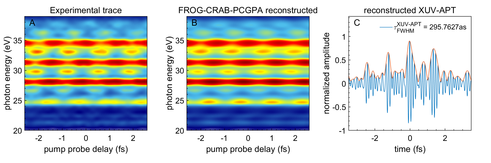
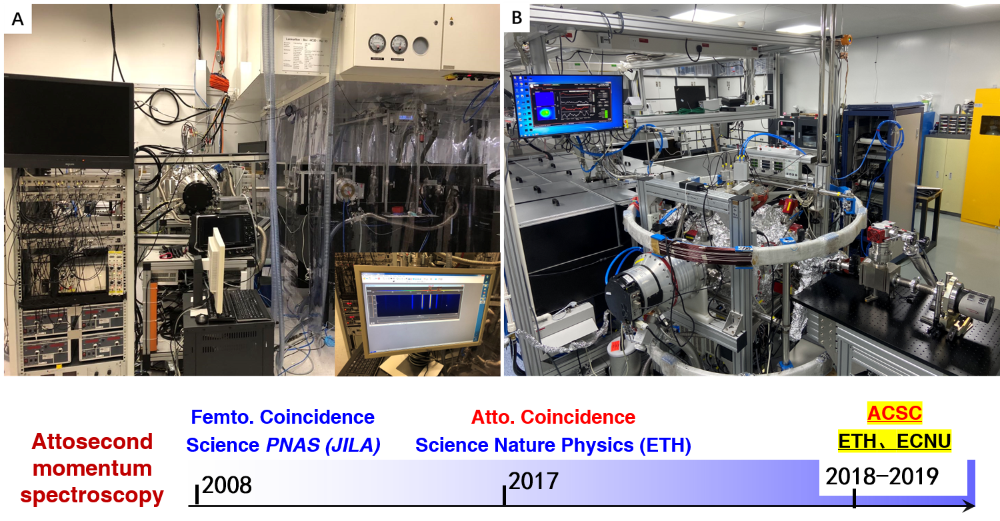

Research Fields
"We are committed to probe the ATTOsecond Science in atom, molecule, cluster and even solid states by design the most advanced attosecond coincidence metrology and attosecond XUV spectroscopy."
Ultrafast dynamics in AMCs
Attosecond pulse generation
 The table-top extreme ultraviolet (XUV) attosecond light source is based on the high-order harmonic generation (HHG) scheme in a capillary waveguide, which is filled with argon gas. The capillary waveguide has a total length of 6~cm and an inner diameter of 150~$\mu$m. The HHG process is driven by a multipass amplified Titanium-Sapphire laser system (RAEA) which delivers near-infrared (NIR) femtosecond laser pulses with 1.6 mJ energy at 10 kHz repetition rate, a central wavelength of 780 nm and a pulse duration of 28fs. A coaxial 200-nm aluminum foil on a quartz ring is placed before a rare gold coated toroidal mirror ($f=50$ cm) to gate the XUV spectrum and block the residual IR pulse co-propagating with the XUV beam. The generated XUV attosecond pulse train (XUV-APT) is recombined with the remaining part of the IR beam after the toroidal mirror via a central holed silver mirror to constitute a Mach-Zehnder interferometer. The relative time delay between the XUV-APT and NIR pulse is controlled via a combined motor stage including the high-precision direct-current motor on the femtosecond time scale and piezoelectric motor working on attosecond time scale with a time jitter of 22 attoseconds. The relative phase between XUV-APT and NIR pulse is actively controlled via a close-loop feedback-control algorithm. The XUV-APT covers the high harmonic orders from the 15th (M15, 23.55 eV) to 25th (M25th, 39.25 eV). Based on the measured rare gas RABBITT spectrum, the electric field of the XUV-APT is reconstructed via the reconstruction approach of the frequency-resolved optical gating for complete reconstruction of attosecond bursts (FROG-CRAB) through the iterative algorithm of principal component generalized projection algorithms (PCGPA). A full width at half maximum at 295 attoseconds is estimated from the reconstruction.
Attosecond coincidence spectroscopy
 Two advanced and world-leading attosecond coincidence interferometers were designed and constrcuted by Prof. Dr. Xiaochun Gong in ETH zurich and ECNU under the support from Prof. Hans Jakob Woerner and Prof. Jian Wu, respectively. This fantastic technique was fristly realized in Prof. U. Keller's group in ETH zurich. Based on their pioneering exproling, Xiaochun Gong fully developed this technique further into complex molecules and clusters since 2018.